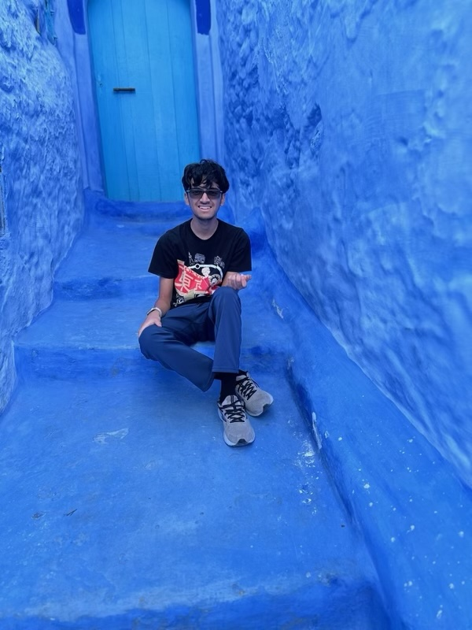

Ravi Kamdar
Tech Director
Hi, my name is Ravi Kamdar, and I'm a Rising Junior at Ridge High School. I’m interested in Computer Science, and the ways in which code and data can be used to improve the world. I enjoy problem solving and finding creative solutions to problems.
As the Tech Director, I'll be managing all things tech-related at Hearts for Healing, and ultimately using the power of technology to help my community.
When I'm not coding or solving problems, I like to play video games or watch TV.